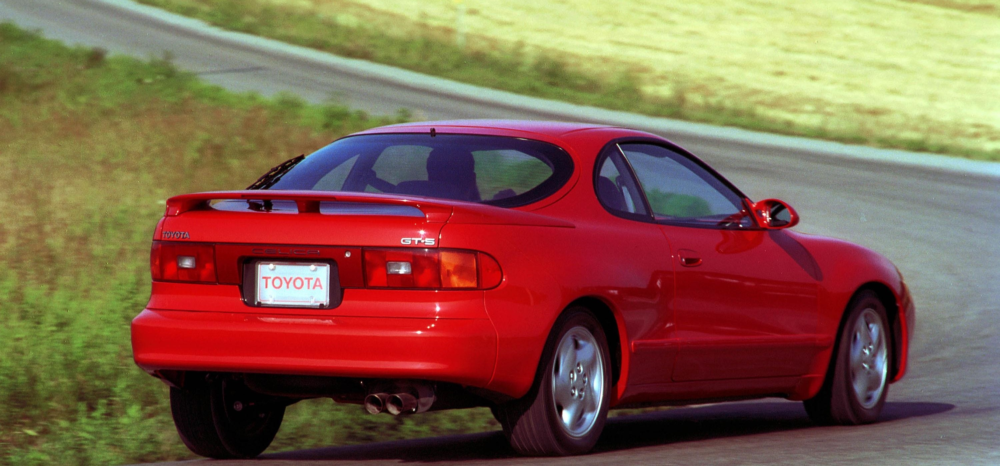
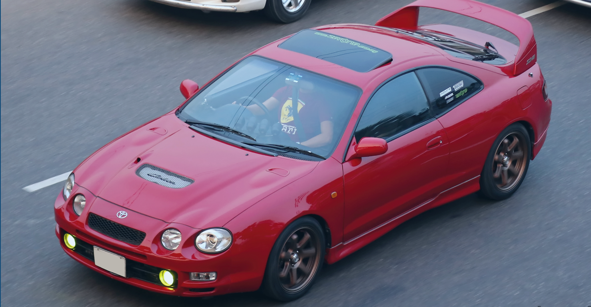
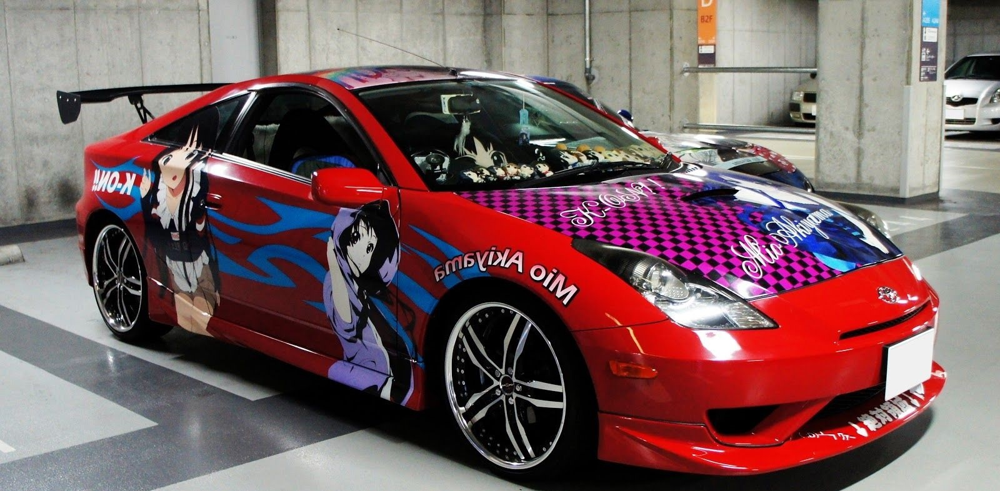

Toyota Celica
Toyota Celica (яп. トヨタ・セリカ, Toyota Serika) — спортивный автомобиль, выпускавшийся японской автопроизводительной фирмой Toyota Motor Corporation. На протяжении своей истории Celica комплектовалась разнообразными 4-цилиндровыми двигателями. Наиболее значимые изменения произошли в августе 1985 года, когда задний привод уступил место переднему. Полноприводная турбированная модель GT-Four производилась с 1985 по 1999 год. Система сдвига фаз газораспределения появилась в конце 1997 года на японских моделях (кроме GT-Four) и стала стандартной для всех рынков в 2000 году. В течение семи поколений Celica претерпела множество конструкторских и дизайнерских изменений, включая Toyota Celica Supra (позже отделившуюся в самостоятельную модель — Toyota Supra). Были доступны кузова хэтчбек, лифтбэк, а также кабриолет. Последняя Celica сошла с конвейера 20 апреля 2006 года. На этом закончилась почти 36-летняя история модели.
Пятое поколение:
Шестое поколение:
Седьмое поколение:
